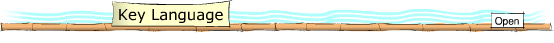
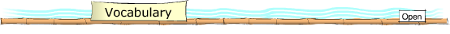

This section provides you with the key language needed to talk about families.
The key
language is relevant to the whole unit.
 二十四岁èrshísì suì 二十四岁èrshísì suì | twenty-four years of age |
| 我是研究生wǒ shì yánjiūshēng | I am a research student. |
| 我学数学wǒ xué shùxué | I am studying mathematics. |
| 我来自南京wǒ láizì Nánjīng | I am from Nanjing. |
| 我的专业是经济wǒ de zhuānyè shì jīngjì | My subject is economics, |
| 他在银行上班tā zài yínháng shàngbān | He works at a bank. |
| 我们有一个儿子wǒmen yǒu yī gè érzi | We have a son. |
| 你有兄弟姐妹吗?nǐ yǒu xiōngdìjiěmèi ma | Do you have brothers and sisters? |
| 她有一个姐姐和一个弟弟tā yǒu yī gè jiějie hé yī gè dìdi | She has an older sister and a younger brother. |
| 我是独生子wǒ shì dúshēngzǐ | I am a lone child. |
| 你有叔叔阿姨吗nǐ yǒu shūshu āyí ma | Do you have uncles and aunts? |
| 你多大了nǐ duō dà le | How old are you? |
| 你几岁了nǐ jǐ suì le | How old are you? |
| 我父亲退休了, 我妈妈还工作wǒ fùqin tùixiū le, wǒ māma hái gōngzuò | My father has retired, my mother still works. |
| 我在一家电脑公司工作wǒ zài yī jiā diànnǎo gōngsī gōngzuò. | I work for a computer company. |

Key vocabulary for talking about families.
| 嘿 | hey |
| 图书馆 | library |
| 回来 | to return |
| 对 | yes, correct |
| 刚 | just now |
| 记得 | to remember |
| 杭州 | Hangzhou |
| 想念 | to miss |
| 父母 | parents |
| 公务员 | government official |
| 老师 | teacher |
| 教 | to teach |
| 计算机 | computing |
| 有意思 | interesting |
| 从事 | to be engaged in |
| 工作 | work |
| 退休 | to retire |
| 秘书 | secretary |
| 大姐 | oldest sister |
| 医院 | hospital |
| 经理 | manager |
| 医生 | doctor |
| 然后 | and then |
| 恩 | mmh |
| 已经 | already |
| 当上 | to work as (after promotion) |
| 一定 | certainly |
| 比 | compared to |
| 应该 | ought, must |
| 鼠 | rat |
| 狗 | dog |
| 工程 | Engineering |
| 电影 | film |
| 专业 | speciality, subject |
| 棒 | excellent |

| Amanda: | 嘿，你好。 |
| 杨帆 : | 嘿，你好。你从图书馆回来了？ |
| Amanda: | 对，我刚回来了。我记得你是从杭州来的。你想念你的父母吗？ |
| 杨帆 : | 恩，我很想念他们。他们现在都还在杭州呢。 |
| Amanda: | 是嘛，他们做什么？ |
| 杨帆 : | 我爸爸是作公务员，我妈妈是老师。 |
| Amanda: | 是吗，她教什么？ |
| 杨帆 : | 我妈妈教计算机。 |
| Amanda: | 啊，有意思。 |
| 杨帆 : | 你们家呢？你们家有几口人？ |
| Amanda: | 我家有六口人。有我爸爸，我妈妈，两个姐姐，弟弟，还有我。 |
| 杨帆 : | 他们是从事什么工作的呢？ |
| Amanda: | 我爸爸退休了。我妈妈是秘书。我大姐是医院经理。我二姐是医生。然后，我弟弟还有我是学生。 |
| 杨帆 : | 啊，是嘛。 |
| Amanda: | 恩，是的。 |
| 杨帆 : | 大姐都已经当上经理了，一定比你大很多吧？ |
| Amanda: | 比我大五岁半。 |
| 杨帆 : | 那你今年多大了呢？ |
| Amanda: | 我今年二十四岁。 |
| 杨帆 : | 二十四岁，二十四岁是应该属什么呢？ |
| Amanda: | 我属，我属鼠。 |
| 杨帆 : | 哦。 |
| Amanda: | 你呢？你属什么？ |
| 杨帆 : | 我属狗。 |
| Amanda: | 哦，是嘛。你学习什么呢？ |
| 杨帆 : | 我在这里学习工程。 |
| Amanda: | 恩。 |
| 杨帆 : | 你学的是？ |
| Amanda: | 中国电影，是我的专业。 |
| 杨帆 : | 很棒。 |
| Amanda: | Hēi, nǐhǎo. |
| Yáng Fān: | Hēi, nǐhǎo. Nǐ cóng túshūguǎn huílai le? |
| Amanda: | Duì, wǒ gāng huílái le. Wǒ jìde nǐ shì cóng Hángzhōu lái de. Nǐ xiǎngniàn nǐ de fùmǔ ma? |
| Yáng Fān: | Ēn, wǒ hěn xiǎngniàn tāmen. Tāmen xiànzài dōu hái zài Hángzhōu ne. |
| Amanda: | Shì ma, tāmen zuò shénme? |
| Yáng Fān: | Wǒ bàba shì zuò gōngwùyuán, wǒ māma shì lǎoshī. |
| Amanda: | Shì ma, tā jiāo shénme? |
| Yáng Fān: | Wǒ māma jiāo jìsuànjī. |
| Amanda: | Ā, yǒuyìsi. |
| Yáng Fān: | Nǐmen jiā ne? Nǐmen jiā yǒu jǐ kǒu rén? |
| Amanda: | Wǒ jiā yǒu liù kǒu rén. Yǒu wǒ bàba, wǒ māma, liǎng gè jiějie, dìdi, háiyǒu wǒ. |
| Yáng Fān: | Tāmen shì cóngshì shénme gōngzuò de ne? |
| Amanda: | Wǒ bàba tuìxiū le. Wǒ māma shì mìshu. Wǒ dàjiě shì yīyuàn jīnglǐ. Wǒ èr jiě shì yīshēng. Ránhòu, wǒ dìdi háiyǒu wǒ shì xuéshēng. |
| Yáng Fān: | Ā, shì ma. |
| Amanda: | Ēn, shì de. |
| Yáng Fān: | Dàjiě dōu yǐjīng dāng shàng jīnglǐ le, yīdìng bǐ nǐ dà hěnduō ba? |
| Amanda: | Bǐ wǒ dà wǔ suì bàn. |
| Yáng Fān: | Nà nǐ jīnnián duō dà le ne? |
| Amanda: | Wǒ jīnnián èr shí sì suì |
| Yáng Fān: | Èr shí sì suì, èr shí sì suì shì yīnggāi shǔ shénme ne? |
| Amanda: | Wǒ shǔ, wǒ shǔ shǔ. |
| Yáng Fān: | Ō. |
| Amanda: | Nǐ ne? Nǐ shǔ shénme? |
| Yáng Fān: | Wǒ shǔ gǒu. |
| Amanda: | Ō, shì ma. Nǐ xuéxí shénme ne? |
| Yáng Fān: | Wǒ zài zhèlǐ xuéxí gōngchéng. |
| Amanda: | Ēn. |
| Yáng Fān: | Nǐ xué de shì? |
| Amanda: | Zhōngguó diànyǐng, shì wǒ de zhuānyè. |
| Yáng Fān: | Hěn bàng. |

| Amanda: | Hey, hello. |
| Fan Yang: | Hey, hello. Are you coming back from the library? |
| Amanda: | Yes. I have just come back. I remember you are from Hangzhou. Do you miss your parents? |
| Fan Yang: | Mmh. I miss them a lot. At the moment they are still in Hangzhou. |
| Amanda: | Ok. What do they do? |
| Fan Yang: | My father works as a gonvernment employee. My mother is a teacher. |
| Amanda: | Ah really? What does she teach? |
| Fan Yang: | My mother teaches computing. |
| Amanda: | Ah, interesting. |
| Fan Yang: | And your family? How many are there in your family? |
| Amanda: | We are six: my father, my mother, two older sisters, a younger brother and me. |
| Fan Yang: | What work do they do? |
| Amanda: | My father has retired. My mother works as a secretary. My oldest sister is a hospital manager. My second oldest sister is a doctor. And then, me and my brother, we are both students. |
| Fan Yang: | Ah, ok. |
| Amanda: | Mmh, yes. |
| Fan Yang: | For how long has your sister worked as a manager? She must be a lot older than you? |
| Amanda: | She is five years older than me. |
| Fan Yang: | How old are you this year? |
| Amanda: | I am twenty-four this year. |
| Fan Yang: | Twenty-four. Twenty-four, so what is your animal sign? |
| Amanda: | I am a rat. I was born in the year of rat. |
| Fan Yang: | Oh. |
| Amanda: | And you. What year do you belong to? |
| Fan Yang: | I was born in the year of dog. |
| Amanda: | Oh, ok. What are you studying? |
| Fan Yang: | I am studying Engineering here. |
| Amanda: | Mmh. |
| Fan Yang: | What do you study? |
| Amanda: | Chinese film, that is my subject. |
| Fan Yang: | Excellent. |